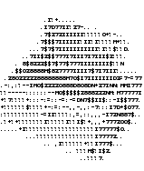
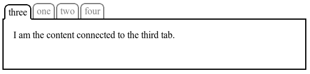
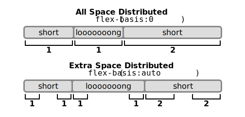
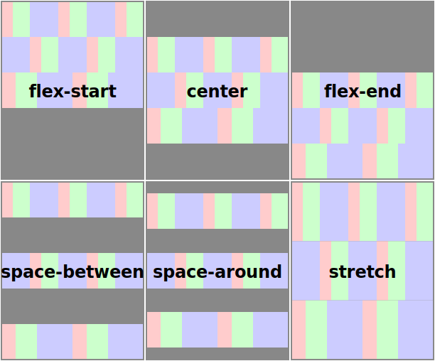

The specification describes a CSS box model optimized for user interface design. In the flex layout model, the children of a flex container can be laid out in any direction, and can “flex” their sizes, either growing to fill unused space or shrinking to avoid overflowing the parent. Both horizontal and vertical alignment of the children can be easily manipulated. Nesting of these boxes (horizontal inside vertical, or vertical inside horizontal) can be used to build layouts in two dimensions.
CSS is a language for describing the rendering of structured documents
(such as HTML and XML)
on screen, on paper, in speech, etc.
Status of this document
This is a public copy of the editors’ draft.
It is provided for discussion only and may change at any moment.
Its publication here does not imply endorsement of its contents by W3C.
Don’t cite this document other than as work in progress.
The (archived) public mailing list www-style@w3.org (see instructions)
is preferred for discussion of this specification.
When sending e-mail,
please put the text “css-flexbox” in the subject,
preferably like this:
“[css-flexbox] …summary of comment…”
CSS 2.1 defined four layout modes — algorithms which determine
the size and position of boxes based on their relationships
with their sibling and ancestor boxes:
block layout, designed for laying out documents
inline layout, designed for laying out text
table layout, designed for laying out 2D data in a tabular format
positioned layout, designed for very explicit positioning without much regard for other elements in the document
This module introduces a new layout mode, flex layout,
which is designed for laying out more complex applications and webpages.
1.1. Overview
This section is not normative.
Flex layout is superficially similar to block layout.
It lacks many of the more complex text- or document-centric properties
that can be used in block layout, such as floats and columns.
In return it gains simple and powerful tools
for distributing space and aligning content
in ways that web apps and complex web pages often need.
The contents of a flex container:
can be laid out in any flow direction (leftwards, rightwards, downwards, or even upwards!)
can have their display order reversed or rearranged at the style layer
(i.e., visual order can be independent of source and speech order)
can be laid out linearly along a single (main) axis or wrapped into multiple lines along a secondary (cross) axis
Here’s an example of a catalog where each item has a title, a photo, a description, and a purchase button.
The designer’s intention is that each entry has the same overall size,
that the photo be above the text,
and that the purchase buttons aligned at the bottom, regardless of the length of the item’s description.
Flex layout makes many aspects of this design easy:
The catalog uses flex layout to lay out rows of items horizontally,
and to ensure that items within a row are all equal-height.
Each entry is then itself a column flex container,
laying out its contents vertically.
Within each entry, the source document content is ordered logically
with the title first, followed by the description and the photo.
This provides a sensible ordering for speech rendering and in non-CSS browsers.
For a more compelling visual presentation, however, order is used to pull the image up from later in the content to the top,
and align-self is used to center it horizontally.
An auto margin above the purchase button
forces it to the bottom within each entry box,
regardless of the height of that item’s description.
<sectionid="deals"><sectionclass="sale-item"><h1>Computer Starter Kit</h1><p>This is the best computer money can buy, if you don’t have much money.
<ul><li>Computer
<li>Monitor
<li>Keyboard
<li>Mouse
</ul><imgsrc="images/computer.jpg"alt="You get: a white computer with matching peripherals."><button>BUY NOW</button></section><sectionclass="sale-item">
…
</section>
…
</section>
Computer Starter Kit
This is the best computer money can buy,
if you don’t have much money.
Computer
Monitor
Keyboard
Mouse

Printer
Only capable of printing
ASCII art.
Paper and ink not included.
An example rendering of the code above.
1.2. Module interactions
This module extends the definition of the display property [CSS21],
adding a new block-level and new inline-level display type,
and defining a new type of formatting context
along with properties to control its layout.
None of the properties defined in this module apply to the ::first-line or ::first-letter pseudo-elements.
2. Flex Layout Box Model and Terminology
A flex container is the box generated by an element with a
computed display of flex or inline-flex.
In-flow children of a flex container are called flex items and are laid out using the flex layout model.
Unlike block and inline layout,
whose layout calculations are biased to the block and inline flow directions,
flex layout is biased to the flex directions.
To make it easier to talk about flex layout,
this section defines a set of flex flow–relative terms.
The flex-flow value and the writing mode determine how these terms map
to physical directions (top/right/bottom/left),
axes (vertical/horizontal), and sizes (width/height).
An illustration of the various directions and sizing terms as applied to a row flex container.
main axis
main dimension
The main axis of a flex container is the primary axis along which flex items are laid out.
It extends in the main dimension.
main-start
main-end
The flex items are placed within the container
starting on the main-start side
and going toward the main-end side.
The axis perpendicular to the main axis is called the cross axis.
It extends in the cross dimension.
cross-start
cross-end
Flex lines are filled with items and placed into the container
starting on the cross-start side of the flex container
and going toward the cross-end side.
This value causes an element to generate a block-level flex container box.
inline-flex
This value causes an element to generate an inline-level flex container box.
A flex container establishes a new flex formatting context for its contents.
This is the same as establishing a block formatting context,
except that flex layout is used instead of block layout.
For example, floats do not intrude into the flex container,
and the flex container’s margins do not collapse with the margins of its contents. Flex containers form a containing block for their contents exactly like block containers do. [CSS21] The overflow property applies to flex containers.
Flex containers are not block containers,
and so some properties that were designed with the assumption of block layout don’t apply in the context of flex layout.
In particular:
the column-* properties in the Multi-column Layout module [CSS3COL] have no effect on a flex container.
float and clear do not create floating or clearance of flex item,
and do not take it out-of-flow.
If an element’s specified display is inline-flex,
then its display property computes to flex in certain circumstances:
the table in CSS 2.1 Section 9.7 is amended to contain an additional row,
with inline-flex in the "Specified Value" column
and flex in the "Computed Value" column.
4. Flex Items
Loosely speaking, the flex items of a flex container are boxes representing its in-flow contents.
Each in-flow child of a flex container becomes a flex item,
and each contiguous run of text that is directly contained inside a flex container is wrapped in an anonymous flex item.
However, an anonymous flex item that contains only white space (i.e. characters that can be affected by the white-space property)
is not rendered (just as if it were display:none).
Note that the inter-element white space disappears:
it does not become its own flex item,
even though the inter-element text does get wrapped in an anonymous flex item.
Note also that the anonymous item’s box is unstyleable,
since there is no element to assign style rules to.
Its contents will however inherit styles (such as font settings) from the flex container.
A flex item establishes a new formatting context for its contents.
The type of this formatting context is determined by its display value, as usual.
However, flex items themselves are flex-level boxes, not block-level boxes:
they participate in their container’s flex formatting context,
not in a block formatting context.
Note: Some values of display normally trigger the creation of anonymous boxes around the original box.
If such a box is a flex item,
it is blockified first,
and so anonymous box creation will not happen.
For example, two contiguous flex items with display: table-cell will become two separate display: blockflex items,
instead of being wrapped into a single anonymous table.
4.1. Absolutely-Positioned Flex Children
An absolutely-positioned child of a flex container does not participate in flex layout.
However, it does participate in the reordering step (see order),
which has an effect on painting order.
The static position of an absolutely-positioned child of a flex container is determined such that the child is positioned
as if it were the sole flex item in the flex container,
assuming both the child and the flex container
were fixed-size boxes of their used size.
The static-position rectangle is the alignment container used to determine the static-position offsets of an absolutely-positioned box.
In block layout it corresponds to the position of the “hypothetical box”
described in CSS2.1§10.3.7.
(Since it has no alignment properties,
CSS2.1 always uses a block-startinline-start alignment
of the absolutely-positioned box within the static-position rectangle.)
Note that this definition will eventually move to the CSS Positioning module.
Percentage margins and paddings on flex items are always resolved against their own axis:
left and right margins resolve against the containing’s block width,
and top and bottom margins resolve against the containing block’s height.
Unlike blocks, block-axis margins do not resolve against
the inline dimension of their containing block.
Auto margins expand to absorb extra space in the corresponding dimension.
They can be used for alignment,
or to push adjacent flex items apart.
See Aligning with auto margins.
4.3. Flex Item Z-Ordering
Flex items paint exactly the same as inline blocks [CSS21],
except that order-modified document order is used in place of raw document order,
and z-index values other than auto create a stacking context
even if position is static.
Note: Descendants that are positioned outside a flex item still participate
in any stacking context established by the flex item.
4.4. Collapsed Items
Specifying visibility:collapse on a flex item
causes it to become a collapsed flex item,
producing an effect similar to visibility:collapse on a table-row or table-column:
the collapsed flex item is removed from rendering entirely,
but leaves behind a "strut" that keeps the flex line’s cross-size stable.
Thus, if a flex container has only one flex line,
dynamically collapsing or uncollapsing items
may change the flex container’s main size, but
is guaranteed to have no effect on its cross size and won’t cause the rest of the page’s layout to "wobble".
Flex line wrapping is re-done after collapsing, however,
so the cross-size of a flex container with multiple lines might or might not change.
Though collapsed flex items aren’t rendered,
they do appear in the formatting structure.
Therefore, unlike on display:none items [CSS21],
effects that depend on a box appearing in the formatting structure
(like incrementing counters or running animations and transitions)
still operate on collapsed items.
In the following example,
a sidebar is sized to fit its content. visibility: collapse is used to dynamically hide parts of a navigation sidebar
without affecting its width, even though the widest item (“Architecture”)
is in a collapsed section.
Sample live rendering for example code below
Hover over the menu to the left:
each section expands to show its sub-items.
In order to keep the sidebar width (and this main area width) stable, visibility: collapse is used instead of display: none.
This results in a sidebar that is always wide enough for the word “Architecture”,
even though it is not always visible.
@media (min-width: 60em) {
/* two column layout only when enough room (relative to default text size) */
div { display: flex; }
#main {
flex: 1; /* Main takes up all remaining space */
order: 1; /* Place it after (to the right of) the navigation */
min-width: 12em; /* Optimize main content area sizing */
}
}
/* menu items use flex layout so that visibility:collapse will work */
nav > ul > li {
display: flex;
flex-flow: column;
}
/* dynamically collapse submenus when not targetted */
nav > ul > li:not(:target):not(:hover) > ul {
visibility: collapse;
}
To compute the size of the strut, flex layout is first performed with all items uncollapsed,
and then re-run with each collapsed item replaced by a strut that maintains
the original cross-size of the item’s original line.
See the Flex Layout Algorithm for the normative definition of how visibility:collapse interacts with flex layout.
Note: Using visibility:collapse on any flex items
will cause the flex layout algorithm to repeat partway through,
re-running the most expensive steps.
It’s recommended that authors continue to use display:none to hide items
if the items will not be dynamically collapsed and uncollapsed,
as that is more efficient for the layout engine.
(Since only part of the steps need to be repeated when visibility is changed,
however, 'visibility: collapse' is still recommended for dynamic cases.)
4.5. Implied Minimum Size of Flex Items
To provide a more reasonable default minimum size for flex items,
this specification introduces a new auto value
as the initial value of the min-width and min-height properties defined in CSS 2.1. [CSS21]
Otherwise,
this keyword computes to 0 (unless otherwise defined by a future specification).
Note that while a content-based minimum size is often appropriate,
and helps prevent content from overlapping or spilling outside its container,
in some cases it is not:
In particular, if flex sizing is being used for a major content area of a document,
it is better to set an explicit font-relative minimum width such as min-width: 12em.
A content-based minimum width could result in a large table or large image
stretching the size of the entire content area into an overflow zone,
and thereby making lines of text gratuitously long and hard to read.
Note also, when content-based sizing is used on an item with large amounts of content,
the layout engine must traverse all of this content before finding its minimum size,
whereas if the author sets an explicit minimum, this is not necessary.
(For items with small amounts of content, however,
this traversal is trivial and therefore not a performance concern.)
In order to prevent cycling sizing,
the auto value of min-height and max-height does not factor into the percentage size resolution of the box’s contents.
For example, a percentage-height block whose flex item parent has height: 120em; min-height: auto will size itself against height: 120em regardless of the impact
that min-height might have on the used size of the flex item.
5. Ordering and Orientation
The contents of a flex container can be laid out in any direction and in any order.
This allows an author to trivially achieve effects that would previously have required complex or fragile methods,
such as hacks using the float and clear properties.
This functionality is exposed through the flex-direction, flex-wrap, and order properties.
Note: The reordering capabilities of flex layout intentionally affect only the visual rendering,
leaving speech order and navigation based on the source order.
This allows authors to manipulate the visual presentation
while leaving the source order intact for non-CSS UAs and for
linear models such as speech and sequential navigation.
See Reordering and Accessibility and the Flex Layout Overview for examples
that use this dichotomy to improve accessibility.
Authors must not use order or the *-reverse values of flex-flow/flex-direction as a substitute for correct source ordering,
as that can ruin the accessibility of the document.
The flex-direction property specifies how flex items are placed in the flex container,
by setting the direction of the flex container’s main axis.
This determines the direction in which flex items are laid out.
Note: The reverse values do not reverse box ordering:
like writing-mode and direction[CSS3-WRITING-MODES],
they only change the direction of flow.
Painting order, speech order, and sequential navigation orders
are not affected.
The flex-wrap property controls whether the flex container is single-line or multi-line,
and the direction of the cross-axis,
which determines the direction new lines are stacked in.
The flex-flow property is a shorthand for setting the flex-direction and flex-wrap properties,
which together define the flex container’s main and cross axes.
Some examples of valid flows in an English (left-to-right, horizontal writing mode) document:
div{flex-flow:row;}/* Initial value. Main-axis is inline, no wrapping. (Items will either shrink to fit or overflow.) */
div{flex-flow:columnwrap;}/* Main-axis is block-direction (top to bottom) and lines wrap in the inline direction (rightwards). */
div{flex-flow:row-reversewrap-reverse;}/* Main-axis is the opposite of inline direction (right to left). New lines wrap upwards. */
Note that the flex-flow directions are writing mode sensitive.
In vertical Japanese, for example,
a row flex container lays out its contents from top to bottom,
as seen in this example:
Flex items are, by default, displayed and laid out in the same order as they appear in the source document.
The order property can be used to change this ordering.
The order property controls the order in which
children of a flex container appear within the flex container,
by assigning them to ordinal groups.
It takes a single <integer> value,
which specifies which ordinal group the flex item belongs to.
A flex container lays out its content in order-modified document order,
starting from the lowest numbered ordinal group and going up.
Items with the same ordinal group are laid out in the order they appear in the source document.
This also affects the painting order[CSS21],
exactly as if the flex items were reordered in the source document.
The following figure shows a simple tabbed interface, where the tab for the active pane is always first:

This could be implemented with the following CSS (showing only the relevant code):
.tabs{display:flex;}.tabs>.current{order:-1;/* Lower than the default of 0 */}
Unless otherwise specified by a future specification,
this property has no effect on boxes that are not children of a flex container.
5.4.1. Reordering and Accessibility
The order property does not affect ordering in non-visual media
(such as speech).
Likewise, order does not affect
the default traversal order of sequential navigation modes
(such as cycling through links, see e.g. tabindex[HTML5]).
Authors must use order only for visual, not logical, reordering of content.
Style sheets that use order to perform logical reordering are non-conforming.
Note: This is so that non-visual media and non-CSS UAs,
which typically present content linearly,
can rely on a logical source order,
while order is used to tailor the visual order.
(Since visual perception is two-dimensional and non-linear,
the desired visual order is not always logical.)
Many web pages have a similar shape in the markup,
with a header on top,
a footer on bottom,
and then a content area and one or two additional columns in the middle.
Generally,
it’s desirable that the content come first in the page’s source code,
before the additional columns.
However, this makes many common designs,
such as simply having the additional columns on the left and the content area on the right,
difficult to achieve.
This has been addressed in many ways over the years,
often going by the name "Holy Grail Layout" when there are two additional columns. order makes this trivial.
For example, take the following sketch of a page’s code and desired layout:
As an added bonus,
the columns will all be equal-height by default,
and the main content will be as wide as necessary to fill the screen.
Additionally,
this can then be combined with media queries to switch to an all-vertical layout on narrow screens:
@mediaalland(max-width:600px){/* Too narrow to support three columns */#main{flex-flow:column;}#main>article,#main>nav,#main>aside{/* Return them to document order */order:0;width:auto;}}
(Further use of multi-line flex containers to achieve even more intelligent wrapping left as an exercise for the reader.)
In order to preserve the author’s intended ordering in all presentation modes,
authoring tools—including WYSIWYG editors as well as Web-based authoring aids—must reorder the underlying document source
and not use order to perform reordering
unless the author has explicitly indicated that the underlying
document order (which determines speech and navigation order) should be out-of-sync with the visual order.
For example, a tool might offer both drag-and-drop reordering of flex items
as well as handling of media queries for alternate layouts per screen size range.
Since most of the time, reordering should affect all screen ranges
as well as navigation and speech order,
the tool would perform drag-and-drop reordering at the DOM layer.
In some cases, however, the author may want different visual orderings per screen size.
The tool could offer this functionality by using order together with media queries,
but also tie the smallest screen size’s ordering to the underlying DOM order
(since this is most likely to be a logical linear presentation order)
while using order to determine the visual presentation order in other size ranges.
This tool would be conformant, whereas a tool that only ever used order to handle drag-and-drop reordering
(however convenient it might be to implement it that way)
would be non-conformant.
6. Flex Lines
Flex items in a flex container are laid out and aligned
within flex lines,
hypothetical containers used for grouping and alignment by the layout algorithm.
A flex container can be either single-line or multi-line,
depending on the flex-wrap property:
A single-line flex container
(i.e. one with flex-wrap: nowrap)
lays out all of its children in a single line,
even if that would cause its contents to overflow.
A multi-line flex container
(i.e. one with flex-wrap: wrap or flex-wrap: wrap-reverse)
breaks its flex items across multiple lines,
similar to how text is broken onto a new line when it gets too wide to fit on the existing line.
When additional lines are created,
they are stacked in the flex container along the cross axis according to the flex-wrap property.
Every line contains at least one flex item,
unless the flex container itself is completely empty.
This example shows four buttons that do not fit side-by-side horizontally,
and therefore will wrap into multiple lines.
Since the container is 300px wide, only three of the items fit onto a single line.
They take up 240px, with 60px left over of remaining space.
Because the flex-flow property specifies a multi-line flex container
(due to the wrap keyword appearing in its value),
the flex container will create an additional line to contain the last item.
An example rendering of the multi-line flex container.
Once content is broken into lines,
each line is laid out independently;
flexible lengths and the justify-content and align-self properties only consider the items on a single line at a time.
Here’s the same example as the previous,
except that the flex items have all been given flex: auto.
The first line has 60px of remaining space,
and all of the items have the same flexibility,
so each of the three items on that line will receive 20px of extra width,
each ending up 100px wide.
The remaining item is on a line of its own
and will stretch to the entire width of the line, i.e. 300px.
A rendering of the same as above,
but with the items all given flex: auto.
7. Flexibility
The defining aspect of flex layout is the ability to make the flex items “flex”,
altering their width/height to fill the available space in the main dimension.
This is done with the flex property.
A flex container distributes free space to its items (proportional to their flex grow factor) to fill the container,
or shrinks them (proportional to their flex shrink factor) to prevent overflow.
This <number> component sets flex-growlonghand and specifies the flex grow factor,
which determines how much the flex item will grow
relative to the rest of the flex items in the flex container
when positive free space is distributed.
When omitted, it is set to 1.
This <number> component sets flex-shrinklonghand and specifies the flex shrink factor,
which determines how much the flex item will shrink
relative to the rest of the flex items in the flex container
when negative free space is distributed.
When omitted, it is set to 1.
Note: The flex shrink factor is multiplied by the flex base size when distributing negative space.
This distributes negative space in proportion to how much the item is able to shrink,
so that e.g. a small item won’t shrink to zero before a larger item has been noticeably reduced.
This component sets the flex-basislonghand and specifies the flex basis:
the initial main size of the flex item,
before free space is distributed according to the flex factors.
It accepts the same values as the width and height properties
(except that auto is treated differently)
plus the content keyword:
Indicates automatic sizing, based on the flex item’s content.
Note: This value was not present in the initial release of Flexible Box Layout,
and thus some older implementations will not support it.
The equivalent effect can be achieved by using auto together with a main size (width or height) of auto.

A diagram showing the difference between "absolute" flex
(starting from a basis of zero)
and "relative" flex
(starting from a basis of the item’s content size).
The three items have flex factors of 1, 1, and 2, respectively:
notice that the item with a flex factor of 2 grows twice as fast as the others.
The initial values of the flex components are equivalent to flex: 0 1 auto.
Note: The initial values of flex-grow and flex-basis are different from their defaults when omitted in the flex shorthand.
This is so that the flex shorthand can better accommodate the most common cases.
A unitless zero that is not already preceded by two flex factors
must be interpreted as a flex factor.
To avoid misinterpretation or invalid declarations,
authors must specify a zero <‘flex-basis’> component
with a unit or precede it by two flex factors.
Equivalent to flex: 0 1 auto. (This is the initial value.)
Sizes the item based on the width/height properties.
(If the item’s main size property computes to auto,
this will size the flex item based on its contents.)
Makes the flex item inflexible when there is positive free space,
but allows it to shrink to its minimum size when there is insufficient space.
The alignment abilities or auto margins can be used to align flex items along the main axis.
Equivalent to flex: 1 1 auto.
Sizes the item based on the width/height properties,
but makes them fully flexible, so that they absorb any free space along the main axis.
If all items are either flex: auto, flex: initial, or flex: none,
any positive free space after the items have been sized will be distributed evenly to the items with flex: auto.
Equivalent to flex: 0 0 auto.
This value sizes the item according to the width/height properties,
but makes the flex item fully inflexible.
This is similar to initial,
except that flex items are not allowed to shrink,
even in overflow situations.
Equivalent to flex: <positive-number> 1 0.
Makes the flex item flexible and sets the flex basis to zero,
resulting in an item that receives the specified proportion of the free space in the flex container.
If all items in the flex container use this pattern,
their sizes will be proportional to the specified flex factor.
Individual components of flexibility can be controlled by independent longhand properties.
Authors are encouraged to control flexibility using the flex shorthand
rather than with its longhand properties directly,
as the shorthand correctly resets any unspecified components
to accommodate common uses.
Authors are encouraged to control flexibility using the flex shorthand
rather than with flex-grow directly,
as the shorthand correctly resets any unspecified components
to accommodate common uses.
Authors are encouraged to control flexibility using the flex shorthand
rather than with flex-shrink directly,
as the shorthand correctly resets any unspecified components
to accommodate common uses.
Authors are encouraged to control flexibility using the flex shorthand
rather than with flex-basis directly,
as the shorthand correctly resets any unspecified components
to accommodate common uses.
For all values other than auto and content (defined above), flex-basis is resolved the same way as width in horizontal writing modes [CSS21].
For example, percentage values of flex-basis are resolved against
the flex item’s containing block (i.e. its flex container)
and if that containing block’s size is indefinite,
the result is the same as a main size of auto (which in this case is treated as content).
As another corollary, flex-basis determines the size of the content box,
unless otherwise specified
such as by box-sizing[CSS3UI].
8. Alignment
After a flex container’s contents have finished their flexing
and the dimensions of all flex items are finalized,
they can then be aligned within the flex container.
The margin properties can be used to align items in a manner similar to, but more powerful than, what margins can do in block layout. Flex items also respect the alignment properties from CSS Box Alignment,
which allow easy keyword-based alignment of items in both the main axis and cross axis.
These properties make many common types of alignment trivial,
including some things that were very difficult in CSS 2.1,
like horizontal and vertical centering.
Note: While the alignment properties are defined in CSS Box Alignment,
Flexible Box Layout reproduces the definitions of the relevant ones here
so as to not create a normative dependency that may slow down advancement of the spec.
These properties apply only to flex layout
until CSS Box Alignment Level 3 is finished
and defines their effect for other layout modes.
This section is non-normative.
The normative definition of how margins affect flex items is in the Flex Layout Algorithm section.
Auto margins on flex items have an effect very similar to auto margins in block flow:
During calculations of flex bases and flexible lengths, auto margins are treated as 0.
Prior to alignment via justify-content and align-self,
any positive free space is distributed to auto margins in that dimension.
Overflowing boxes ignore their auto margins and overflow in the end direction.
Note: If free space is distributed to auto margins,
the alignment properties will have no effect in that dimension
because the margins will have stolen all the free space
left over after flexing.
One use of auto margins in the main axis is to separate flex items into distinct "groups".
The following example shows how to use this to reproduce a common UI pattern -
a single bar of actions with some aligned on the left and others aligned on the right.
Sample rendering of the code below.
The figure below illustrates the difference in cross-axis alignment in overflow situations between
using auto margins and using the alignment properties.
About
Authoritarianism
Blog
About
Authoritarianism
Blog
The items in the figure on the left are centered with margins,
while those in the figure on the right are centered with align-self.
If this column flex container was placed against the left edge of the page,
the margin behavior would be more desirable,
as the long item would be fully readable.
In other circumstances,
the true centering behavior might be better.
The justify-content property aligns flex items along the main axis of the current line of the flex container.
This is done after any flexible lengths and any auto margins have been resolved.
Typically it helps distribute extra free space leftover when either
all the flex items on a line are inflexible,
or are flexible but have reached their maximum size.
It also exerts some control over the alignment of items when they overflow the line.
flex-start
Flex items are packed toward the start of the line.
The main-start margin edge of the first flex item on the line
is placed flush with the main-start edge of the line,
and each subsequent flex item is placed flush with the preceding item.
flex-end
Flex items are packed toward the end of the line.
The main-end margin edge of the last flex item is placed flush with the main-end edge of the line,
and each preceding flex item is placed flush with the subsequent item.
center
Flex items are packed toward the center of the line.
The flex items on the line are placed flush with each other
and aligned in the center of the line,
with equal amounts of space between the main-start edge of the line and the first item on the line
and between the main-end edge of the line and the last item on the line.
(If the leftover free-space is negative,
the flex items will overflow equally in both directions.)
space-between
Flex items are evenly distributed in the line.
If the leftover free-space is negative
or there is only a single flex item on the line,
this value is identical to flex-start.
Otherwise,
the main-start margin edge of the first flex item on the line
is placed flush with the main-start edge of the line,
the main-end margin edge of the last flex item on the line
is placed flush with the main-end edge of the line,
and the remaining flex items on the line are distributed
so that the spacing between any two adjacent items is the same.
space-around
Flex items are evenly distributed in the line,
with half-size spaces on either end.
If the leftover free-space is negative or
there is only a single flex item on the line,
this value is identical to center.
Otherwise, the flex items on the line are distributed
such that the spacing between any two adjacent flex items on the line is the same,
and the spacing between the first/last flex items and the flex container edges
is half the size of the spacing between flex items.
An illustration of the five justify-content keywords and their effects on a flex container with three colored items.
auto computes to parent’s align-items value; otherwise as specified
Animatable:
no
Flex items can be aligned in the cross axis of the current line of the flex container,
similar to justify-content but in the perpendicular direction. align-items sets the default alignment for all of the flex container’s items,
including anonymous flex items. align-self allows this default alignment to be overridden for individual flex items.
(For anonymous flex items, align-self always matches the value of align-items on their associated flex container.)
A value of auto for align-self computes to the value of align-items on the element’s parent,
or stretch if the element has no parent.
The alignments are defined as:
The flex item’s margin box is centered in the cross axis within the line.
(If the cross size of the flex line is less than that of the flex item,
it will overflow equally in both directions.)
Otherwise,
it participates in baseline alignment:
all participating flex items on the line
are aligned such that their baselines align,
and the item with the largest distance between its baseline and its cross-start margin edge
is placed flush against the cross-start edge of the line.
The align-content property aligns a flex container’s lines within the flex container
when there is extra space in the cross-axis,
similar to how justify-content aligns individual items within the main-axis.
Note, this property has no effect on a single-lineflex container.
Values have the following meanings:
flex-start
Lines are packed toward the start of the flex container.
The cross-start edge of the first line in the flex container
is placed flush with the cross-start edge of the flex container,
and each subsequent line is placed flush with the preceding line.
flex-end
Lines are packed toward the end of the flex container.
The cross-end edge of the last line
is placed flush with the cross-end edge of the flex container,
and each preceding line is placed flush with the subsequent line.
center
Lines are packed toward the center of the flex container.
The lines in the flex container are placed flush with each other
and aligned in the center of the flex container,
with equal amounts of space
between the cross-start content edge of the flex container
and the first line in the flex container,
and between the cross-end content edge of the flex container
and the last line in the flex container.
(If the leftover free-space is negative,
the lines will overflow equally in both directions.)
space-between
Lines are evenly distributed in the flex container.
If the leftover free-space is negative
this value is identical to flex-start.
Otherwise,
the cross-start edge of the first line in the flex container
is placed flush with the cross-start content edge of the flex container,
the cross-end edge of the last line in the flex container
is placed flush with the cross-end content edge of the flex container,
and the remaining lines in the flex container are distributed
so that the spacing between any two adjacent lines is the same.
space-around
Lines are evenly distributed in the flex container,
with half-size spaces on either end.
If the leftover free-space is negative
this value is identical to center.
Otherwise, the lines in the flex container are distributed
such that the spacing between any two adjacent lines is the same,
and the spacing between the first/last lines and the flex container edges
is half the size of the spacing between flex lines.
stretch
Lines stretch to take up the remaining space.
If the leftover free-space is negative,
this value is identical to flex-start.
Otherwise,
the free-space is split equally between all of the lines,
increasing their cross size.
Note: Only multi-lineflex containers ever have free space in the cross-axis for lines to be aligned in,
because in a single-line flex container
the sole line automatically stretches to fill the space.

An illustration of the align-content keywords and their effects on a multi-line flex container.
Otherwise, if the flex container has at least one flex item,
and its first flex item has a baseline
parallel to the flex container’s main axis,
the flex container’s main-axis baseline is that baseline.
Otherwise, the flex container’s main-axis baseline is synthesized from the first item’s content box,
or, failing that, from the flex container’s content box.
cross-axis baseline
If the flex container has at least one flex item,
and its first flex item has a baseline
parallel to the flex container’s cross axis,
the flex container’s cross-axis baseline is that baseline.
Otherwise, the flex container’s cross-axis baseline is synthesized from the first item’s content box,
or, failing that, from the flex container’s content box.
When calculating the baseline according to the above rules,
if the box contributing a baseline has an overflow value that allows scrolling,
the box must be treated as being in its initial scroll position
for the purpose of determining its baseline.
This section contains normative algorithms
detailing the exact layout behavior of a flex container and its contents.
The algorithms here are written to optimize readability and theoretical simplicity,
and may not necessarily be the most efficient.
Implementations may use whatever actual algorithms they wish,
but must produce the same results as the algorithms described here.
Note: This section is mainly intended for implementors.
Authors writing web pages should generally be served well by the individual property descriptions,
and do not need to read this section unless they have a deep-seated urge to understand arcane details of CSS layout.
The following sections define the algorithm for laying out a flex container and its contents.
9.1. Initial Setup
Generate anonymous flex items as described in the Flex Items section.
Re-order the flex items (and any absolutely positioned flex container children) according to their order. The flex items with the lowest (most negative) order values are first in the ordering.
If multiple flex items share an order value,
they’re ordered by document order.
This effectively changes the order of their boxes in the box-tree,
and how the rest of this algorithm deals with the generated flex items.
Note: Absolutely-positioned children of a flex container
do not participate in flex layout,
but are reordered together with any flex item children.
9.2. Line Length Determination
Determine the available main and cross space for the flex items. For each dimension,
if that dimension of the flex container’s content box is a definite size, use that;
otherwise, subtract the flex container’s margin, border, and padding
from the space available to the flex container in that dimension
and use that value. This might result in an infinite value.
If the used flex basis is content or depends on its available size,
and the flex container is being sized under a min-content or max-content constraint
(e.g. when performing automatic table layout[CSS21]),
size the item under that constraint.
The flex base size is the item’s resulting main size.
Note: This case occurs, for example,
in an English document (horizontal writing mode)
containing a column flex container
containing a vertical Japanese (vertical writing mode) flex item.
Determine the main size of the flex container using the rules of the formatting context in which it participates.
For this computation, auto margins on flex items are treated as 0.
9.3. Main Size Determination
Collect flex items into flex lines:
If the flex container is single-line,
collect all the flex items into a single flex line.
Otherwise,
starting from the first uncollected item,
collect consecutive items one by one
until the first time that the next collected item
would not fit into the flex container’s inner main size
(or until a forced break is encountered,
see §10 Fragmenting Flex Layout).
If the very first uncollected item wouldn’t fit,
collect just it into the line.
Repeat until all flex items have been collected into flex lines.
Note that the "collect as many" line will collect zero-sized flex items
onto the end of the previous line
even if the last non-zero item exactly "filled up" the line.
Collect all the flex items whose inline-axis is parallel to the main-axis,
whose align-self is baseline,
and whose cross-axis margins are both non-auto.
Find the largest of the distances between each item’s baseline and its hypothetical outer cross-start edge,
and the largest of the distances between each item’s baseline and its hypothetical outer cross-end edge,
and sum these two values.
Among all the items not collected by the previous step,
find the largest outer hypothetical cross size.
The used cross-size of the flex line is the largest of the numbers found in the previous two steps and zero.
If the flex container is single-line,
then clamp the line’s cross-size to be within the container’s computed min and max cross-size properties. Note that if CSS 2.1’s definition of min/max-width/height applied more generally,
this behavior would fall out automatically.
Handle 'align-content: stretch'. If the flex container has a definite cross size, align-content is stretch,
and the sum of the flex lines' cross sizes is less than the flex container’s inner cross size,
increase the cross size of each flex line by equal amounts
such that the sum of their cross sizes exactly equals the flex container’s inner cross size.
Collapse visibility:collapse items. If any flex items have visibility: collapse,
note the cross size of the line they’re in as the item’s strut size,
and restart layout from the beginning.
In this second layout round,
when collecting items into lines,
treat the collapsed items as having zero main size.
For the rest of the algorithm following that step,
ignore the collapsed items entirely
(as if they were display:none)
except that after calculating the cross size of the lines,
if any line’s cross size is less than
the largest strut size among all the collapsed items in the line,
set its cross size to that strut size.
Skip this step in the second layout round.
Determine the used cross size of each flex item. If a flex item has align-self: stretch,
its computed cross size property is auto,
and neither of its cross-axis margins are auto,
the used outer cross size is the used cross size of its flex line,
clamped according to the item’s min and max cross size properties.
Otherwise,
the used cross size is the item’s hypothetical cross size.
If the flex item has align-self: stretch,
redo layout for its contents,
treating this used size as its definite cross size
so that percentage-sized children can be resolved.
Note that this step does not affect the main size of the flex item,
even if it has an intrinsic aspect ratio.
9.5. Main-Axis Alignment
Distribute any remaining free space. For each flex line:
If the remaining free space is positive
and at least one main-axis margin on this line is auto,
distribute the free space equally among these margins.
Otherwise, set all auto margins to zero.
Resolve cross-axis auto margins. If a flex item has auto cross-axis margins:
If its outer cross size
(treating those auto margins as zero)
is less than the cross size of its flex line,
distribute the difference in those sizes equally
to the auto margins.
Otherwise,
if the block-start or inline-start margin (whichever is in the cross axis)
is auto, set it to zero.
Set the opposite margin so that the outer cross size of the item
equals the cross size of its flex line.
Align all flex items along the cross-axis per align-self,
if neither of the item’s cross-axis margins are auto.
Determine the flex container’s used cross size:
If the cross size property is a definite size,
use that,
clamped by the min and max cross size properties of the flex container.
Otherwise,
use the sum of the flex lines' cross sizes,
clamped by the min and max cross size properties of the flex container.
To resolve the flexible lengths of the items within a flex line:
Determine the used flex factor.
Sum the outer hypothetical main sizes of all items on the line.
If the sum is less than the flex container’s inner main size,
use the flex grow factor for the rest of this algorithm;
otherwise, use the flex shrink factor.
Size inflexible items. Freeze,
setting its target main size to its hypothetical main size…
Calculate initial free space. Sum the outer sizes of all items on the line,
and subtract this from the flex container’s inner main size.
For frozen items, use their outer target main size;
for other items, use their outer flex base size.
Loop:
Check for flexible items. If all the flex items on the line are frozen,
free space has been distributed;
exit this loop.
Calculate the remaining free space as for initial free space, above.
If the sum of the unfrozen flex items’ flex factors is less than one,
multiply the initial free space by this sum.
If the magnitude of this value is less than the magnitude of the remaining free space,
use this as the remaining free space.
Distribute free space proportional to the flex factors.
Find the ratio of the item’s flex grow factor
to the sum of the flex grow factors of all unfrozen items on the line.
Set the item’s target main size to its flex base size plus a fraction of the remaining free space proportional to the ratio.
For every unfrozen item on the line,
multiply its flex shrink factor by its inner flex base size,
and note this as its scaled flex shrink factor.
Find the ratio of the item’s scaled flex shrink factor to the sum of the scaled flex shrink factors of all unfrozen items on the line.
Set the item’s target main size to its flex base size minus a fraction of the absolute value of the remaining free space proportional to the ratio. Note this may result in a negative inner main size;
it will be corrected in the next step.
Otherwise
Do nothing.
Fix min/max violations. Clamp each non-frozen item’s target main size by its min and max main size properties.
If the item’s target main size was made smaller by this,
it’s a max violation.
If the item’s target main size was made larger by this,
it’s a min violation.
Freeze over-flexed items. The total violation is the sum of the adjustments from the previous step ∑(clamped size - unclamped size).
If the total violation is:
For the purposes of these definitions,
a definite size is one that can be determined without measuring content,
i.e. is a <length>,
a size of the initial containing block,
or a <percentage> that is resolved against a definite size.
An indefinite size is one that is not definite.
Flexbox has several additional cases where a length can be considered definite:
The intrinsic sizing of a flex container is used
to produce various types of content-based automatic sizing,
such as shrink-to-fit logical widths (which use the fit-content formula)
and content-based logical heights (which use the max-content main size).
The min-content cross size and max-content cross size of a flex container
are the cross size of the flex container
after performing layout into the given available main-axis space and infinite available cross-axis space.
See [CSS3-SIZING] for a definition of the terms in this section.
10. Fragmenting Flex Layout
Flex containers can break across pages
between items,
between lines of items (in multi-line mode),
and inside items.
The break-* properties apply to flex containers as normal for block-level or inline-level boxes.
This section defines how they apply to flex items
and the contents of flex items.
The following breaking rules refer to the fragmentation container as the “page”.
The same rules apply to any other fragmenters.
(Substitute “page” with the appropriate fragmenter type as needed.)
See the CSS3 Fragmentation Module [CSS3-BREAK].
For readability, in this section the terms "row" and "column" refer to the relative orientation
of the flex container with respect to the block flow direction of the fragmentation context,
rather than to that of the flex container itself.
The exact layout of a fragmented flex container is not defined in this level of Flexible Box Layout.
However, breaks inside a flex container are subject to the following rules:
In a row flex container,
the break-before and break-after properties on flex items
are propagated to the flex line.
The break-before property on the first line
and the break-after property on the last line
are propagated to the flex container.
In a column flex container,
the break-before property on the first item
and the break-after property on the last item
are propagated to the flex container.
Forced breaks on other items are applied to the item itself.
A forced break inside a flex item effectively increases the size of its contents;
it does not trigger a forced break inside sibling items.
When a flex container is continued after a break,
the space available to its flex items (in the block flow direction of the fragmentation context)
is reduced by the space consumed by flex container fragments on previous pages.
The space consumed by a flex container fragment is
the size of its content box on that page.
If as a result of this adjustment the available space becomes negative,
it is set to zero.
If the first fragment of the flex container is not at the top of the page,
and some of its flex items don’t fit in the remaining space on the page,
the entire fragment is moved to the next page.
When a multi-line column flex container breaks,
each fragment has its own "stack" of flex lines,
just like each fragment of a multi-column element
has its own row of column boxes.
Aside from the rearrangement of items imposed by the previous point,
UAs should attempt to minimize distortion of the flex container
with respect to unfragmented flow.
10.1. Sample Flex Fragmentation Algorithm
This informative section presents a possible fragmentation algorithm for flex containers.
Implementors are encouraged to improve on this algorithm and provide feedback to the CSS Working Group.
This algorithm assumes that pagination always proceeds only in the forward direction;
therefore, in the algorithms below, alignment is mostly ignored prior to pagination.
Advanced layout engines may be able to honor alignment across fragments.
Lay out as many consecutive flex items or item fragments as possible
(but at least one or a fragment thereof),
starting from the first,
until there is no more room on the page
or a forced break is encountered.
If the previous step ran out of room
and the free space is positive,
the UA may reduce the distributed free space on this page
(down to, but not past, zero)
in order to make room for the next unbreakable flex item or fragment.
Otherwise,
the item or fragment that does not fit is pushed to the next page.
The UA should pull up if more than 50% of the fragment would have fit in the remaining space
and should push otherwise.
If there are any flex items or fragments not laid out by the previous steps,
rerun the flex layout algorithm
from Line Length Determination through Cross Sizing Determination with the next page’s size
and all the contents (including those already laid out),
and return to the previous step,
but starting from the first item or fragment not already laid out.
For each fragment of the flex container,
continue the flex layout algorithm
from Main-Axis Alignment to its finish.
It is the intent of this algorithm that column-direction single-line flex containers
paginate very similarly to block flow.
As a test of the intent,
a flex container with justify-content:start and no flexible items
should paginate identically to
a block with in-flow children with same content,
same used size and same used margins.
Run the flex layout algorithm with regards to pagination
(limiting the flex container’s maximum line length to the space left on the page)
through Cross Sizing Determination.
Lay out as many flex lines as possible
(but at least one)
until there is no more room in the flex container
in the cross dimension
or a forced break is encountered:
Lay out as many consecutive flex items as possible
(but at least one),
starting from the first,
until there is no more room on the page
or a forced break is encountered.
Forced breaks within flex items are ignored.
If this is the first flex container fragment,
this line contains only a single flex item
that is larger than the space left on the page,
and the flex container is not at the top of the page already,
move the flex container to the next page
and restart flex container layout entirely.
If there are any flex items not laid out by the first step,
rerun the flex layout algorithm
from Main Sizing Determination through Cross Sizing Determination using only the items not laid out on a previous line,
and return to the previous step,
starting from the first item not already laid out.
If there are any flex items not laid out by the previous step,
rerun the flex layout algorithm
from Line Sizing Determination through Cross Sizing Determination with the next page’s size
and only the items not already laid out,
and return to the previous step,
but starting from the first item not already laid out.
For each fragment of the flex container,
continue the flex layout algorithm
from Main-Axis Alignment to its finish.
If a flex item does not entirely fit on a single page,
it will not be paginated in multi-line column flex containers.
If an unbreakable item doesn’t fit within the space left on the page,
and the flex container is not at the top of the page,
move the flex container to the next page
and restart flex container layout entirely.
For each item,
lay out as much of its contents as will fit in the space left on the page,
and fragment the remaining content onto the next page,
rerunning the flex layout algorithm
from Line Length Determination through Main-Axis Alignment into the new page size
using all the contents (including items completed on previous pages).
Any flex items that fit entirely into previous fragments
still take up space in the main axis in later fragments.
For each fragment of the flex container,
rerun the flex layout algorithm
from Cross-Axis Alignment to its finish.
For all fragments besides the first,
treat align-self and align-content as being flex-start for all item fragments and lines.
If any item,
when aligned according to its original align-self value
into the combined cross size of all the flex container fragments,
would fit entirely within a single flex container fragment,
it may be shifted into that fragment
and aligned appropriately.
Lay out as many flex lines as possible
(but at least one),
starting from the first,
until there is no more room on the page
or a forced break is encountered.
If a line doesn’t fit on the page,
and the line is not at the top of the page,
move the line to the next page
and restart the flex layout algorithm entirely,
using only the items in and following this line.
If a flex item itself causes a forced break,
rerun the flex layout algorithm
from Main Sizing Determination through Main-Axis Alignment,
using only the items on this and following lines,
but with the item causing the break automatically starting a new line
in the line breaking step,
then continue with this step.
Forced breaks within flex items are ignored.
If there are any flex items not laid out by the previous step,
rerun the flex layout algorithm
from Line Length Determination through Main-Axis Alignment with the next page’s size
and only the items not already laid out.
Return to the previous step,
but starting from the first line not already laid out.
For each fragment of the flex container,
continue the flex layout algorithm
from Cross Axis Alignment to its finish.
Erik Anderson,
Tony Chang,
Phil Cupp,
Arron Eicholz,
James Elmore,
Andrew Fedoniouk,
Brian Heuston,
Shinichiro Hamaji,
Daniel Holbert,
Ben Horst,
John Jansen,
Brad Kemper,
Kang-hao Lu,
Markus Mielke,
Peter Moulder,
Robert O’Callahan,
Christoph Päper,
Ning Rogers,
Peter Salas,
Elliott Sprehn,
Morten Stenshorne,
Christian Stockwell,
Ojan Vafai,
Eugene Veselov,
Greg Whitworth,
Boris Zbarsky.
Changes
This section documents the changes since previous publications.
Revert flex shorthand change of omitted flex-basis back to 0,
since that was a hacky way of solving an intrinsic size problem,
and isn’t needed (and gives bad results)
given a correct implementation of §9.9 Intrinsic Sizes.
Correct instrinsic sizing rules to handle inflexible items.
Add explicit conformance criteria on authoring tools
to keep presentation and DOM order in sync
unless author explicitly indicates a desire to make them out-of-sync.
Reverted flex-basis: auto to its original meaning.
Added flex-basis: content keyword to explicitly specify automatic content-based sizing.
(Issue 10)
Made applicability of align-content depend on wrappability rather than number of resulting flex lines.
(Issue 4)
When a flex container has multiple lines,
In a multi-lineflex container (even one with only a single line),
the cross size of each line is the minimum size necessary [...]
When a flex container (even a multi-line one) has only one line,
In a single-lineflex container,
the cross size of the line is the cross size of the flex container,
and align-content has no effect.
Note, this property has no effect
when the flex container has only a single line.
on a single-lineflex container.
Only
flex containers with multiple linesmulti-lineflex containers
ever have free space in the cross-axis for lines to be aligned in,
because in a
flex container with a single linesingle-line flex container
the sole line automatically stretches to fill the space.
If the flex container
has only one flex line (even if it’s a multi-lineflex container)
is single-line
and has a definitecross size,
the cross size of the flex line is the flex container’s inner cross size.
If the flex container
has only one flex line
(even if it’s a multi-line flex container),
is single-line,
then clamp the line’s cross-size to be within the container’s computed min and max cross-size properties.
Removed text that asserted forced breaking behavior,
replaced with reference to fragmentation section.
This resolves a conflict in the spec.
(Issue 18)
For every unfrozen item on the line,
multiply its flex shrink factor by its
outer
inner
flex base size,
and note this as its scaled flex shrink factor.
Remove the requirement that the flex basis be content for the specified size to be defined.
The specified size should always win if it is smaller than the intrinsic size.
This is particularly important to maintain author expectations for,
e.g. <img src="…" width=40 height=40 title="100x100 image">.
(Issue 25)
Remove the requirement that anonymous block creation (for things like display: table-cell)
occur beforeflex item blockification.
(Instead, all children now blockify immediately,
consistent with abspos/float behavior.)
Expanded and rewrote definition of min-width: auto to add special handling of items with intrinsic ratios.
(Issues 16 and 28)
On a flex item whose overflow is not visible,
the following table gives the minimum size: [see table] this keyword specifies as the minimum size the smaller of:
Adjusted min-width: auto to only apply the computed main size as a minimum
in cases where the flex basis was retrieved from the main size property.
(Issue 19)
… is defined if
the item’s computed flex-basis is auto and
its computed main size property is definite …
Defined that any size adjustment imposed by a box’s min-width: auto is not consulted when percentage-sizing any of its contents.
(Issue 27)
In order to prevent cycling sizing,
the auto value of min-height and max-height does not factor into the percentage size resolution of the box’s contents.
For example, a percentage-height block whose flex item parent has height: 120em; min-height: auto will size itself against height: 120em regardless of the impact
that min-height might have on the used size of the flex item.
Introduced extra main-size keyword to flex-basis so that “lookup from main-size property” and “automatic sizing” behaviors
could each be explicitly specified.
(Issue 20)
This change was later reverted with an alternative proposal solving the same problem
by instead introducing the content keyword.
If a percentage is going to be resolved against a flex item’s main size,
and the flex item has a definite flex basis,
the main size must be treated as definite for the purpose of resolving the percentage,
and the percentage must resolve against the flexed main size of the flex item
(that is, after the layout algorithm below has been completed for the flex item’s flex container,
and the flex item has acquired its final size).
Clamp a single line flexbox’s line cross size to the container’s own min/max,
even when the container’s size is indefinite.
(Issue 9)
The used cross-size of the flex line is
the largest of the numbers found in the previous two steps
and zero.
If the flex container has only one flex line
(even if it’s a multi-line flex container),
then clamp the line’s cross-size to be within the container’s computed min and max cross-size properties. Note that if CSS 2.1’s definition of min/max-width/height applied more generally,
this behavior would fall out automatically.
Fixed max-content sizing of flex containers to account for flexing behavior
by normalizing per flex fraction rather than merely summing the max-content sizes of the flex items.
(Issue 39)
Updated flex property to accept animations always,
now that the discontinuity between 0 and non-0 values has been fixed.
(Issue 5)
Clarified how the static position of an absolutely-positioned child of a flex container
is calculated by introducing an explanation of the effect more closely tied
with CSS2.1 concepts and terminology.
(Issue 12)
Its
The
static position
of an absolutely-positioned child of a flex container
is
calculated by first doing full flex layout without the absolutely-positioned children,
then positioning each absolutely-positioned child
determined such that the child is positioned
as if it were the sole flex item in the flex container,
assuming both the child and the flex container were fixed-size boxes of their used size.
In other words, the static position of an absolutely positioned child of a flex container
is determined after flex layout by setting the child’s static-position rectangle to the flex container’s content box,
then aligning the absolutely positioned child within this rectangle
according to the justify-content value of the flex container and the align-self value of the child itself.
Clarified application of order to absolutely-positioned children of the flex container:
An absolutely-positioned child of a flex container does not participate in flex layout
beyond the reordering step
.
However, it does participate in the reordering step (see order),
which has an effect in their painting order.
The order property controls the order in which
flex items
children of a flex container
appear within their flex container…
Unless otherwise specified by a future specification,
this property has no effect on boxes that are not
flex items
children of a flex container
.
Note: Absolutely-positioned children of a flex container
do not participate in flex layout, but are reordered
together with any flex item children.
Clarified what a stretched flex item is
for the purposes of special behavior (like definiteness).
(Issue 25)
If the cross size property of the flex item computes to auto,
and either of the cross-axis margins are auto, the flex item is stretched. Its
its
used value …
Changes since the 18 September 2012 Candidate Recommendation
This section documents the changes since the previous publication.
A Disposition of Comments is also available.
Take into account whether overflow is visible,
since when overflow is explicitly handled, it is confusing (and unnecessary)
to force enough size to show all the content.
Take into account the specified width/height,
so that the implied minimum is never greater than the specified size.
Compute to itself (not to min-content) on flex items,
since they are no longer equivalent (due to above changes).
When used as the value of a flex item’s min main size property,
this keyword indicates a minimum of the min-content size,
to help ensure that the item is large enough to fit its contents.
It is intended that this will compute to the min-content keyword
when the specification defining it ([CSS3-SIZING]) is sufficiently mature.
On a flex item whose overflow is not visible,
this keyword specifies as the minimum size the smaller of:
Specified that percentage margins/paddings on flex items
are resolved against their respective dimensions,
not the inline dimension of the containing block like blocks do.
(Issue 16)
Percentage margins and paddings on flex items are always resolved against their respective dimensions;
unlike blocks, they do not always resolve against
the inline dimension of their containing block.
Pass definiteness of a single-line flex container’s size through to any stretched items.
(Issue 3)
Allow percentages inside a stretched auto-height flex item to resolve by requiring a relayout pass.
(Issue 3)
If the flex item has align-self: stretch, redo layout for its contents,
treating this used size as its definite cross size so that percentage-sized children can be resolved.
Note that this step does not affect the main size of the flex item,
even if it has an intrinsic aspect ratio.
Determine the main size of the flex container using its main size property.
In this calculation, the min content main size of the flex container
is the maximum of the flex container’s items' min-content size contributions,
and the max content main size of the flex container
is the sum of the flex container’s items' max-content size contributions.
The min-content/max-content main size contribution of an item is
its outer hypothetical main size
when sized under a min-content/max-content constraint (respectively).
For this computation, ‘auto’ margins on flex items are treated as ‘0’.
Flex lines have their size floored at 0.
(Issue 2)
The used cross-size of the flex line is the
larger
largest
of the numbers found in the previous two steps
and zero
.
Flex items paint like inline blocks rather than blocks.
(Issue 18)
Flex items paint exactly the same as
block-level elements in the normal flow
inline blocks [CSS21]
.
An omitted flex-basis component of the flex shorthand
now resolves to 0% instead of 0px.
Because percentages resolved against indefinite sizes behave as auto,
this gives better behavior in shrink-wrapped flex containers.
(Issue 20)
When omitted from the flex shorthand, its specified value is
0%the length zero
.
Defined that an unresolvable percentage flex base size is treated as auto.
percentage values of flex-basis are resolved against
the flex item’s containing block, i.e. its flex container,
and if that containing block’s size is indefinite,
the result is
undefined
the same as a main size of auto
.
Simplified the static position of abspos children of flex containers to be consistent with Grid Layout.
(Issue 6)
However, if both left and right or both top and bottom are auto,
then the used value of those properties
are computed from its static position, as follows:
The static position is intended to more-or-less match the position of
an anonymous 0×0 in-flow flex-start-aligned
flex item that participates in flex layout,
the primary difference being that any packing spaces due to justify-content: space-around or justify-content: space-between are suppressed around the hypothetical item:
between it and the next item if there is a real item after it,
else between it and the previous item (if any) if there isn’t.
Its static position is calculated by first doing full flex layout
without the absolutely-positioned children,
then positioning each absolutely-positioned child
as if it were the sole flex item in the flex container,
assuming both the child and the flex container were fixed size boxes of their used size.
For example, by default, the static position of
an absolutely positioned child aligns it to the main-start/cross-start corner,
corresponding to the default values of justify-content and align-content on the flex container.
Setting justify-content:center on the flex container, however,
would center it in the main axis.
Re-order the flex items
and absolutely positioned flex container children
according to their order.
Clarified that float still affects the computed display (which may affect box-fixup rules that run prior to flex item determination).
(Issue 7)
float and clear have no effect on a flex item
,
and do not take it out-of-flow.
However, the float property can still affect box generation
by influencing the display property’s computed value.
Clarify what is meant by “white space”. (Issue 26)
However, an anonymous flex item that contains only white space
(i.e. characters that can be affected by the white-space property)
is not rendered, as if it were display:none.
Clarified that table anonymous box generation occurs
in place of computed value conversion for internal table elements.
Clarified interaction of flex item determination with display-inside / display-outside (the new longhands of display defined in the CSS Display Module Level 3).
If the specified display-outside of an in-flow child of an element that generates a flex container is inline-level,
it computes to block-level.
(This effectively converts any inline display values to their block equivalents.)
Clarified that overflow applies to flex containers.
Clarified that ::first-line and ::first-letter pseudo-elements
do not apply to flex containers (because they are not block containers).
Clarify that stretch checks for the computed value of the cross-size property being auto,
which means that percentage cross-sizes that behave as auto (because they don’t resolve against definite sizes) aren’t stretched.
(Issue 5)
Determine the used cross size of each flex item. If a flex item has align-self: stretch,
its
computed
cross size property is auto,
and …
Clarify that the rules of the formatting context are used for determining the flex container’s main size.
Determine the main size of the flex container using
the rules of the formatting context in which it participates
its main size property
.
Clarified that order-modified document order is used instead of raw document order when painting.
(This was already stated in the order section, but not in the section explicitly about painting order.)
Clarified line-breaking to precisely handle negatively-sized flex items and zero-size items at the end of a line.
(Issue 1)
Otherwise,
starting from the first uncollected item,
collect
consecutive items one by one
until the first time that the next collected item
would not fit into the flex container’s inner main size,
or until a forced break is encountered.
If the very first uncollected item wouldn’t fit,
collect just it into the line
as many consecutive flex items as will fit
or until a forced break is encountered
(but collect at least one)
into the flex container’s inner main size into a flex line
.
Note that
items with zero main size will never start a line
unless they’re the very first items in the flex container,
or they’re preceded by a forced break.
The "collect as many" line will collect
them
zero-sized flex items
onto the end of the previous line
even if the last non-zero item exactly "filled up" the line.
Clarified that flex container cross sizes are still clamped by the flex container’s min/max properties.
(Issue 24)
If the cross size property is a definite size,
use that,
clamped by the min and max cross size properties of the flex container
.
Otherwise,
use the sum of the flex lines' cross sizes,
clamped by the min and max cross size properties of the flex container
.
Conformance requirements are expressed with a combination of
descriptive assertions and RFC 2119 terminology. The key words "MUST",
"MUST NOT", "REQUIRED", "SHALL", "SHALL NOT", "SHOULD", "SHOULD NOT",
"RECOMMENDED", "MAY", and "OPTIONAL" in the normative parts of this
document are to be interpreted as described in RFC 2119.
However, for readability, these words do not appear in all uppercase
letters in this specification.
All of the text of this specification is normative except sections
explicitly marked as non-normative, examples, and notes. [RFC2119]
Examples in this specification are introduced with the words "for example"
or are set apart from the normative text with class="example",
like this:
This is an example of an informative example.
Informative notes begin with the word "Note" and are set apart from the
normative text with class="note", like this:
Note, this is an informative note.
Advisements are normative sections styled to evoke special attention and are
set apart from other normative text with <strong class="advisement">, like
this: UAs MUST provide an accessible alternative.
Conformance classes
Conformance to this specification
is defined for three conformance classes:
A style sheet is conformant to this specification
if all of its statements that use syntax defined in this module are valid
according to the generic CSS grammar and the individual grammars of each
feature defined in this module.
A renderer is conformant to this specification
if, in addition to interpreting the style sheet as defined by the
appropriate specifications, it supports all the features defined
by this specification by parsing them correctly
and rendering the document accordingly. However, the inability of a
UA to correctly render a document due to limitations of the device
does not make the UA non-conformant. (For example, a UA is not
required to render color on a monochrome monitor.)
An authoring tool is conformant to this specification
if it writes style sheets that are syntactically correct according to the
generic CSS grammar and the individual grammars of each feature in
this module, and meet all other conformance requirements of style sheets
as described in this module.
Partial implementations
So that authors can exploit the forward-compatible parsing rules to
assign fallback values, CSS renderers must treat as invalid (and ignore
as appropriate) any at-rules, properties, property values, keywords,
and other syntactic constructs for which they have no usable level of
support. In particular, user agents must not selectively
ignore unsupported component values and honor supported values in a single
multi-value property declaration: if any value is considered invalid
(as unsupported values must be), CSS requires that the entire declaration
be ignored.
Experimental implementations
To avoid clashes with future CSS features, the CSS2.1 specification
reserves a prefixed
syntax for proprietary and experimental extensions to CSS.
Prior to a specification reaching the Candidate Recommendation stage
in the W3C process, all implementations of a CSS feature are considered
experimental. The CSS Working Group recommends that implementations
use a vendor-prefixed syntax for such features, including those in
W3C Working Drafts. This avoids incompatibilities with future changes
in the draft.
Non-experimental implementations
Once a specification reaches the Candidate Recommendation stage,
non-experimental implementations are possible, and implementors should
release an unprefixed implementation of any CR-level feature they
can demonstrate to be correctly implemented according to spec.
To establish and maintain the interoperability of CSS across
implementations, the CSS Working Group requests that non-experimental
CSS renderers submit an implementation report (and, if necessary, the
testcases used for that implementation report) to the W3C before
releasing an unprefixed implementation of any CSS features. Testcases
submitted to W3C are subject to review and correction by the CSS
Working Group.